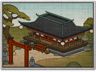

Requires
- Buildings: 
Enables
- Buildings:

Basic Building Statistics (can be modified by difficulty level, arts, skills, traits and retainers)
- Cost: 3360
- +3 happiness
- +1 experience for all warrior monk recruits
- +1 rank(s) for sou recruited in this province
- Enables recruitment of Rank 1 sou
Clan Effects
- Each religious chain building enables you to sustain one additional sou (to a maximum of 5)
Description
A man may contemplate much, including the sword's edge.
The construction of a monastery is a tangible commitment to Buddhism, and it increases the happiness of all people in a province. As might be expected, a monastery is a place of quiet contemplation, removed from the worries of daily life. The monks are free to reach a better understanding of Buddha and his teachings, and to hone their skills as part of their contemplative exercises. In the 8th century, Buddhist monasteries were subject to significant interference from the imperial government. Regulations controlled all aspects of monastic life, and religious leaders found themselves acting as bureaucrats rather than contemplating their own spiritual development. Driven from the monasteries to escape such interference, the monks went out into the country and took the teachings of Buddha to the population as a whole. It was not long before new monasteries, free from Imperial and Court control, were founded. It was, however, useful for the monasteries to have patronage from the great families, and to offer religious respectability in return.